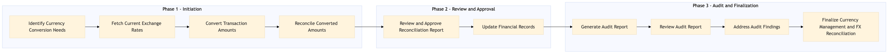

This process document outlines the EX-PY-05 Currency Management and FX Reconciliation for TMC Expense and Payments, detailing how to manage currency conversions and reconcile foreign exchange transactions across various OTA and TMC systems.
| Trigger | Initiation of a new financial period or detection of discrepancies in currency conversion rates. |
| Outcome | Successful reconciliation of all foreign exchange transactions with accurate currency conversion rates, ensuring compliance with corporate policies and regulatory requirements. |
| Systems | Concur T2 Concur Expense Amex GBT Neo/Complete S/4HANA Analytics Cloud Workday AWS SageMaker Snowflake Tableau |

Click to enlarge
| Step | Name & Pain Point | Role | System | Input | Output | KPI | Flags |
|---|---|---|---|---|---|---|---|
| 1.1 | Identify Currency Conversion Needs Handling complex multi-currency environments | Finance Analyst | Concur T2 | List of transactions requiring currency conversion | Currency conversion requirements identified | 100% accuracy in identifying conversion needs | ⚠ Exception |
| 1.2 | Fetch Current Exchange Rates Data latency and rate provider reliability | Finance Analyst | AWS SageMaker, Snowflake | Base currency and target currencies | Current exchange rates | 99% accuracy in fetching real-time rates | ⚠ Exception |
| 1.3 | Convert Transaction Amounts Handling rounding errors | Finance Analyst | Concur Expense, Amex GBT Neo/Complete | Transaction amounts and exchange rates | Converted transaction amounts | 100% accuracy in conversion calculations | ⚠ Exception |
| 1.4 | Reconcile Converted Amounts Handling manual adjustments | Finance Analyst | S/4HANA, Analytics Cloud | Converted transaction amounts and original transactions | Reconciliation report | 95% accuracy in reconciliation | ◆ Decision⚠ Exception |
| 1.5 | Review and Approve Reconciliation Report Delays in review process | Finance Manager | Analytics Cloud, Tableau | Reconciliation report | Approved reconciliation report | 100% approval rate within 24 hours | ⚠ Exception |
| 1.6 | Update Financial Records Data integrity issues | Finance Analyst | S/4HANA, Workday | Approved reconciliation report | Updated financial records | 98% accuracy in record updates | ⚠ Exception |
| 1.7 | Generate Audit Report Complexity in audit reporting | Internal Auditor | Analytics Cloud, Tableau | Final financial records | Audit report | 95% compliance with audit standards | ⚠ Exception |
| 1.8 | Review Audit Report Handling large volumes of data | Finance Manager | Tableau, Email | Audit report | Reviewed audit report | 90% review completion within 7 days | ⚠ Exception |
| 1.9 | Address Audit Findings Resource allocation for corrections | Finance Analyst | S/4HANA, Workday | Audit findings | Corrected financial records | 85% resolution rate within 30 days | ◆ Decision⚠ Exception |
| 1.10 | Finalize Currency Management and FX Reconciliation Handling unexpected transaction volumes | Finance Manager | S/4HANA, Workday | Corrected financial records | Completed currency management and FX reconciliation process | 100% closure of all transactions | ⚠ Exception |